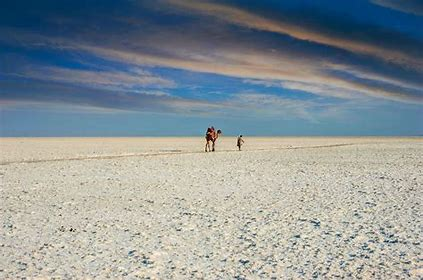
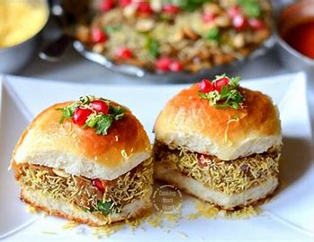

Ice Cream Vendor
A local vendor sells colorful ice cream from his bicycle cart, a charming scene from the streets of Kutch.
Images from the salt plains, local culture, and vibrant landscapes that make Kutch unforgettable.
A local vendor sells colorful ice cream from his bicycle cart, a charming scene from the streets of Kutch.

A man in traditional Kutch clothing walks through a golden field, showcasing the region’s cultural heritage.

Lanterns and glowing tents line the Rann Utsav village, creating a dreamy nighttime atmosphere.

The Rann’s white salt crust reflects the warm morning light, forming a stunning sunrise view.

A rider and camel traverse the wide white salt flats, capturing the quiet beauty of Kutch.

A colorful street snack served fresh, showing the delicious local flavors of Kutch.